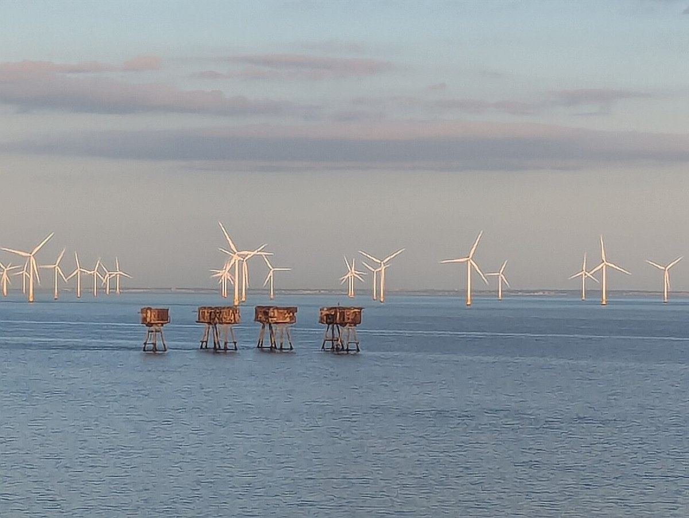
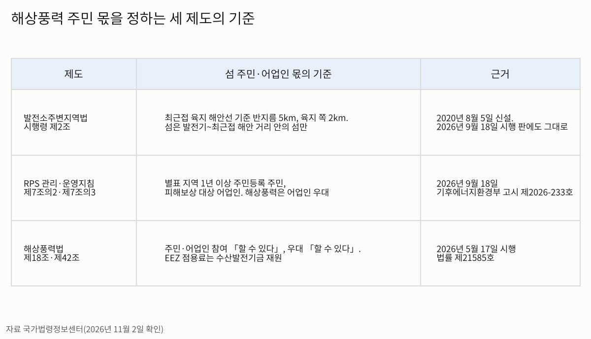
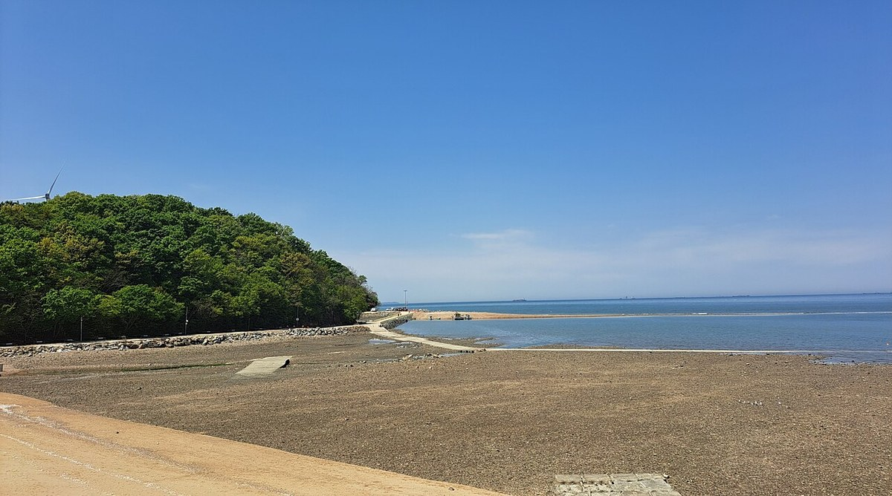
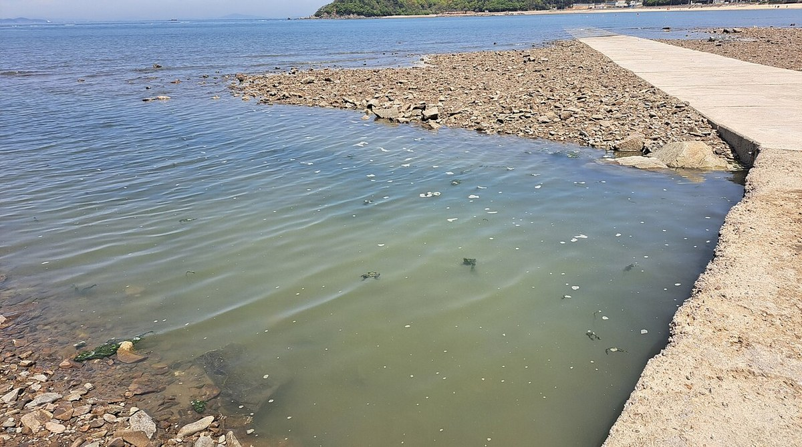
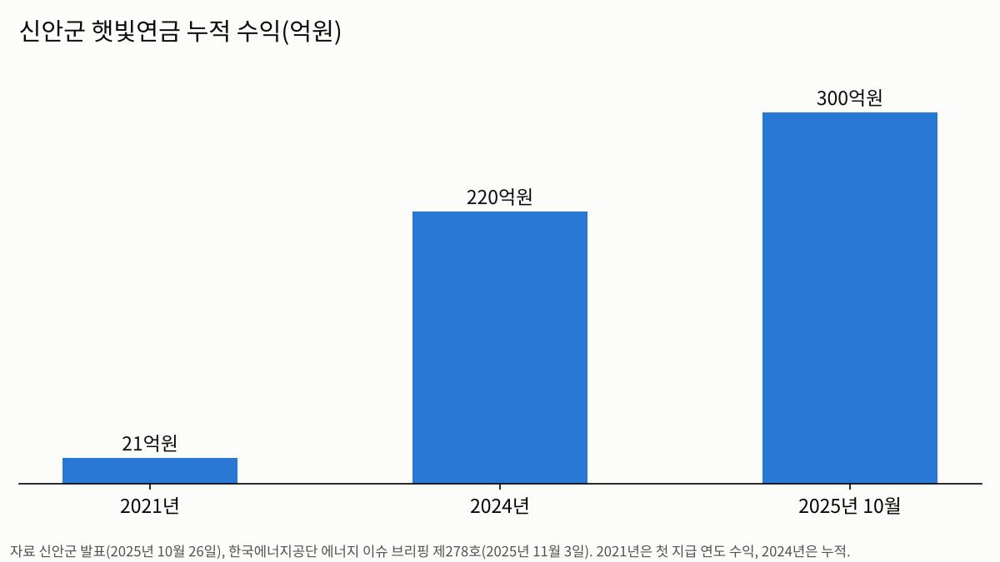

[해상풍력 기획①] 인천 해상풍력, 섬 주민 몫은 법에 없다… 세 갈래 공백
신안은 햇빛연금 누적 300억원, 옹진군 섬은 법정 지원금 0원
해상풍력법 이익공유는 「할 수 있다」, 시행령 기준은 육지 해안선
AI경제저널=김갑봉 기자 | 인천 앞바다 공공주도 해상풍력 680MW가 발전사업허가 절차에 들어갔다. 그런데 발전기와 가장 가까운 옹진군 섬 주민이 법으로 받을 몫은 세 제도 어디에도 분명하지 않다. 어업인과 제도를 고칠 사람이 봐야 할 조문을 세 갈래로 짚는다.
신안은 연금 300억원, 옹진은 0원
전남 신안군은 2018년 10월 신재생에너지 개발이익 공유 정책을 시작했다. 2021년 4월 전국 처음으로 주민에게 햇빛연금을 지급했다. 신안군은 2025년 10월 26일 누적 수익이 300억원을 넘었다고 발표했다. 그해 지급 대상은 군민의 49%인 1만8997명이다.
한국에너지공단 에너지 이슈 브리핑 제278호(2025년 11월 3일)의 집계는 이렇다. 햇빛연금 수익은 2021년 21억원에서 2024년 누적 220억원으로 늘었다. 2025년 지급 예정액은 120억원, 2026년은 137억원이다.
정부는 햇빛·바람연금을 단계별로 전국에 넓히는 계획을 추진한다.

같은 서해안인 인천 옹진군은 다르다. 인천투데이 이종선 기자는 2026년 10월 2일 기사에서 오스테드 인천해상풍력 1·2호를 기준으로 셈했다. 현행 제도로 옹진군이 받을 발전소주변지역 지원금은 없다. 육지 해안선을 기준으로 삼는 법령 구조가 까닭이다.
발전소주변지역법, 섬은 육지 다음이다
발전소주변지역 지원에 관한 법률 제2조는 해상풍력 주변지역의 범위를 대통령령에 맡긴다. 시행령 제2조 제1항 제4호가 그 범위다. 먼저 발전기와 가장 가까운 육지 해안선 지점을 잡는다. 그 지점에서 반지름 5km 안 해안선을 따라 육지 쪽 2km까지가 주변지역이다.
섬은 그다음이다. 발전기에서 그 최근접 해안 지점까지 거리를 반지름으로 하는 해역 안에 있는 섬만 들어간다. 이 기준은 2020년 8월 5일 개정으로 생겼다. 시행령은 2026년 8월 18일 다른 법 개정에 따라 고쳐졌으나 이 기준은 그대로다.

인천투데이 보도를 보면 오스테드 단지 북단·서단·남단 발전기의 최근접 육지 해안선은 북한 옹진반도다. 동단 발전기는 충남 태안군이다.
같은 보도에 따르면 덕적자월어촌계협의회는 2025년 5월 22일 시행령 개정안을 냈다. 발전기 반지름 40km 안에 육지가 없으면 그 안의 섬을 주변지역으로 인정하자는 안이다.
주민참여 지침, 어업인 우대와 별표 기준
주민참여 이익공유는 발전소주변지역법과 다른 제도다. 재생에너지 공급의무화제도 및 연료 혼합의무화제도 관리·운영지침 제7조의2가 근거다. 주민이 사업에 참여하면 사업자가 REC 가중치를 더 받는다. 지침은 2026년 9월 18일 기후에너지환경부 고시 제2026-233호로 바뀌었다.
참여 주민은 지침 별표가 정한 지역에 1년 이상 주민등록을 둔 사람이다. 해상풍력은 어업권 피해보상 대상 어업인도 참여 주민에 넣었다. 제7조의3은 해상풍력에서 이 어업인을 다른 참여 주민보다 우대하라고 정한다.
섬 주민이 별표 지역에 드는지가 갈림길이다.
해상풍력 보급 촉진 및 산업 육성에 관한 특별법 제18조도 주민과 어업인의 사업 참여를 적는다. 다만 문언은 「참여할 수 있다」와 「우대할 수 있다」다. 참여 범위는 기후에너지환경부 장관이 정한다. 민관협의회를 「구성·운영하여야 한다」로 적은 제17조와 층이 다르다.

경상대학교 이동호의 2020년 한국도서연구 논문은 이 대목을 짚는다. 국내 해상풍력 이익공유 논의가 단순한 피해보상에 머문다는 진단이다. 논문은 자본참여와 맞춤형 금융상품을 보완책으로 제안한다.
EEZ 점용료는 수산발전기금으로 간다
세 번째 갈래는 바다 사용료다. 영해에서는 관할 지방자치단체가 공유수면 점용료를 걷는다. 배타적경제수역(EEZ)은 다르다. 해상풍력법 제42조 제2항은 EEZ 해상풍력 점용료·사용료를 수산발전기금 재원으로 조성한다고 정한다.
돈은 기금으로 들어가고 섬 주민에게 바로 가지 않는다. 인천일보는 2023년 5월 30일 기획에서 EEZ는 인천지방해양수산청이 관할한다고 전했다. 지자체 세수가 되지 않는다는 보도였다. 인천투데이는 인천 해상풍력 단지 다수가 EEZ에 걸려 있다고 전한다.
인천투데이는 신안군 사업이 주로 영해 안에서 추진돼 군이 점용료 수입을 확보한다고 전한다. 영해 안쪽과 바깥쪽에서 점용료가 가는 곳이 다르다.
민관협의회는 의무, 옹진군 위원 18명
이익공유를 논의할 자리는 법이 의무로 정한다. 해상풍력법 제17조는 어업인단체·주민대표·송전선로 경과지 주민대표가 참여하는 민관협의회를 두라고 적는다. 협의 사항에 주민참여 이익공유 사업이 들어 있다.
시행령 제11조는 위원을 15명 이상 25명 이내로 정한다. 어업인단체 대표와 주민대표가 2분의 1 이상, 전문가가 5분의 1 이상이다. 옹진군은 2026년 1월 14일 해상풍력발전 지역협의회를 출범했다. 4월에는 덕적면 대표 3명이 합류해 위원이 15명에서 18명으로 늘었다.

옹진군은 조례를 고쳐 위원을 25명까지 늘릴 계획이다. 인천투데이에 따르면 인천시는 공공주도 사업자 공모안에 어업인·섬 주민과의 이익공유 방안을 조건으로 담겠다고 밝혔다.

인천 해상풍력 시민포럼은 2026년 10월 30일 인천테크노파크에서 열렸다. 임효숙 동국대 교수가 어업인 상생과 지역 전력 활용을 담은 미래전략안을 발표했다. 연구진은 12월 중순 최종안을 마련할 계획이다. 남은 것은 시행령 개정 건의, 지침 별표, 특별법 제18조의 「할 수 있다」 셋이다.
참고문헌
- 해상풍력 보급 촉진 및 산업 육성에 관한 특별법 [시행 2026. 5. 17.] [법률 제21585호], 제17조·제18조·제42조, 국가법령정보센터, https://www.law.go.kr/법령/해상풍력보급촉진및산업육성에관한특별법
- 해상풍력 보급 촉진 및 산업 육성에 관한 특별법 시행령 [시행 2026. 9. 18.] [대통령령 제36587호], 제11조, 국가법령정보센터, https://www.law.go.kr/법령/해상풍력보급촉진및산업육성에관한특별법시행령
- 발전소주변지역 지원에 관한 법률 [시행 2025. 10. 1.] [법률 제21065호], 제2조, 국가법령정보센터, https://www.law.go.kr/법령/발전소주변지역지원에관한법률
- 발전소주변지역 지원에 관한 법률 시행령 [시행 2026. 9. 18.] [대통령령 제36587호], 제2조·제27조, 국가법령정보센터, https://www.law.go.kr/법령/발전소주변지역지원에관한법률시행령
- 재생에너지 공급의무화제도 및 연료 혼합의무화제도 관리·운영지침 [시행 2026. 9. 18.] [기후에너지환경부고시 제2026-233호], 제7조의2·제7조의3, 국가법령정보센터, https://www.law.go.kr/행정규칙/재생에너지공급의무화제도및연료혼합의무화제도관리ㆍ운영지침
- 이동호, 「해안지역의 해상풍력발전에 대한 주민 수용성 연구」, 『한국도서연구』 32권 4호, 한국도서(섬)학회, 2020, 67~87쪽, https://doi.org/10.26840/JKI.32.4.67
- 한국에너지공단, 「신재생 ‘햇빛·바람 연금’ 제도 본격화」, 『KEA 에너지 이슈 브리핑』 제278호, 2025년 11월 3일, https://www.energy.or.kr/energy_issue/mail_vol278/pdf/issue_381_03_all.pdf
- 경향신문, 「신안군 ‘햇빛연금’ 누적 수익 300억 돌파···인구 증가·지역경제 활성화 견인」, 2025년 10월 26일, https://www.khan.co.kr/article/202510261231001
- 경인일보, 「공공주도 해상풍력사업 추진 속도… 인천시, 단지 설비용량 발전 허가 신청」, 2026년 7월 30일, https://www.kyeongin.com/article/1768212
- 경인일보, 「‘인천 IC1’ 재생에너지 해상풍력 집적화단지 지정」, 2026년 3월 15일, https://www.kyeongin.com/article/1760282
- 국제뉴스, 「옹진군, 해상풍력발전 지역협의회 공식 출범」, 2026년 1월 14일, https://www.gukjenews.com/news/articleView.html?idxno=3480982
- 뉴스타운, 「덕적면 합류로 빈틈 메웠다…옹진군 해상풍력 협의체 ‘완전체’」, 2026년 4월 21일, https://www.newstown.co.kr/news/articleView.html?idxno=701244
- 인천일보, 「[인천 해상풍력, 주민·탄소중립 다 잡을 묘안은] 영해에선 경제효과, 공해에선 무일푼」, 2023년 5월 30일, https://www.incheonilbo.com/news/articleView.html?idxno=1196034
- 인천투데이(이종선 기자), 「[인천해상풍력 점검⑦] '바람연금' 그림의 떡, 이익공유 사각지대」, 2026년 10월 2일, https://www.incheontoday.com/news/articleView.html?idxno=324459
- 인천투데이(이종선 기자), 「인천시, 공공주도 해상풍력 허가 신청···6조원대 사업비 조달 숙제」, 2026년 7월 30일, https://www.incheontoday.com/news/articleView.html?idxno=321758
- 인천투데이(박규호 기자), 「인천 해상풍력 7GW 추진··· 지역 상생 위한 미래전략 나왔다」, 2026년 10월 30일, https://www.incheontoday.com/news/articleView.html?idxno=325705
- 인천투데이(김갑봉 기자), 「인천 해상풍력발전, 전남 신안 '바람연금' 영향권 들어가」, 2025년 5월 19일, https://www.incheontoday.com/news/articleView.html?idxno=302471
- 인천투데이(김갑봉·이종선 기자), 「인천 해상풍력 6.2GW, 서해안 에너지고속도로 핵심 거점 부상」, 2025년 9월 17일, https://www.incheontoday.com/news/articleView.html?idxno=308462
[사진 출처]
- [사진 1] 위키미디어 공용(CC0, 2024년 8월 10일 촬영)
- [사진 2] 위키미디어 공용(CC0)
- [사진 3] 위키미디어 공용(CC0)
- [도표 1·2] AI경제저널 작성. 자료 국가법령정보센터, 신안군, 한국에너지공단
※ 이 기사는 AI 프로그램 클로드를 활용해 작성했습니다.
관련기사
- [인천해양주권⑮] 인천항 투자 65% 줄 때 부산항은 84% 늘었다
- [해양 AI 융복합⑪] 2028년 완전자동화 부두 앞둔 인천 신항, 크레인은 중국산·운영 프로그램은 국산
- [해양 AI 융복합⑩] 부두 하나서 효율 17% 올린 디지털 트윈, 부산항 전체로 넓히는 388억원 계획
- [해양 AI 융복합⑨] 미 해군 함정 고치는 한국 조선소, AI 정비 앞에 놓인 군 데이터 빗장
저작권자 © AI경제저널 무단전재 및 재배포, AI학습 및 활용 금지